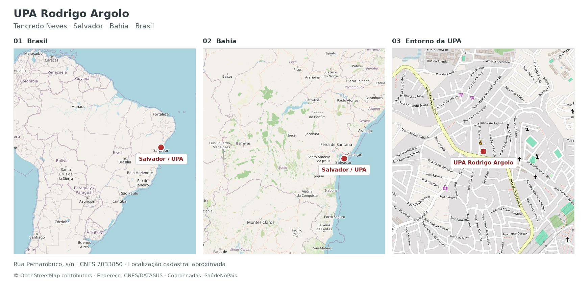

01 / IA em serviço · InCor · 2026
Gorgona
Classificação de ECGs integrada ao atendimento de urgência
42.037 registros processados na plataforma, na consulta de 03/10/2026.
Objetivo
Antecipar a identificação de ECGs com suspeita de corrente de lesão e comunicar esses exames à equipe de regulação. A análise automática ocorre em paralelo à telemedicina. A avaliação do paciente e a decisão assistencial permanecem com a equipe médica.
Responsabilidade no projeto
Conectei o modelo de classificação ao cliente Windows, ao processamento no InCor, ao painel web e ao envio de alertas. A equipe clínica conduziu o protocolo assistencial e a avaliação dos exames.
Decisões de engenharia
- Integração ao atendimento
- A análise automática funciona em paralelo à telemedicina. O alerta acrescenta uma via de comunicação à regulação, mantendo a avaliação e a decisão com a equipe médica.
- Cliente e servidor
- O cliente Windows monitora a pasta de exames e mantém uma fila de envio. A inferência fica no servidor do InCor. O menu local permite reiniciar o cliente e reprocessar arquivos.
- Dados e acesso
- Anonimização local configurável, HTTPS e credenciais por instalação compõem os controles técnicos. A existência desses recursos não substitui uma avaliação de conformidade com a LGPD.

Consulta de 03/10/2026: todas as unidades, período completo, status Processado, classes Corrente de Lesão e Outros. A contagem corresponde a registros de exames, não a pacientes únicos.
Local da implantação
A implantação apresentada ocorreu na UPA Rodrigo Argolo, em Tancredo Neves, Salvador. A unidade realiza os ECGs, e o servidor do InCor concentra a execução do modelo.

Como funciona
Fluxo anterior
O ECG era enviado manualmente à telemedicina. O laudo e a avaliação médica orientavam o acionamento do grupo de regulação no Telegram. O médico da UPA também podia acionar o grupo diretamente diante de forte suspeita.
Com o Gorgona
Acrescentamos uma via automática. O cliente detecta o arquivo, prepara o envio ao InCor e o servidor executa o modelo. Quando a probabilidade de Corrente de Lesão supera 50%, o sistema envia um alerta ao grupo configurado.
| Etapa | Fluxo anterior | Com o Gorgona |
|---|---|---|
| Coleta | Envio manual à telemedicina | Detecção na pasta de exames |
| Análise | Avaliação médica e laudo | Classificação adicional por IA |
| Comunicação | Acionamento pela equipe | Alerta automático pelo Telegram |
| Decisão | Equipe médica e regulação | Equipe médica e regulação |
Cliente Windows, servidor e plataforma online
O programa na UPA
O ECG-IA Client acompanha a pasta de exames no Windows e coloca novos arquivos em uma fila local de envio. Cada instalação utiliza uma credencial própria. O menu na bandeja permite configurar, reiniciar e reprocessar a pasta.


Servidor e plataforma online
Uma API FastAPI recebe o exame, extrai metadados e converte o traçado em imagem quando necessário. Classes e probabilidades são armazenadas em SQLite. O painel permite consultar resultados e acompanhar clientes, enquanto a integração com Telegram encaminha os alertas.

Proteção de dados e LGPD
A proposta prevê anonimização no computador da UPA antes da transmissão. O recurso é configurável no cliente. HTTPS, autenticação por instalação e perfis de acesso complementam o tratamento local dos arquivos. Essas medidas descrevem a proteção técnica dos dados, sem constituir uma avaliação formal de conformidade integral com a LGPD.
A plataforma online permite filtrar por unidade, período, status e classe. A tela abaixo mostra a consulta à classe Corrente de Lesão entre 02/10 e 03/10/2026, diferente do filtro usado para a contagem de 42.037 registros.

Resultados e avaliação
Estudo de caso
Em 20 de maio de 2026, um atendimento na UPA Rodrigo Argolo permitiu acompanhar o fluxo completo. A admissão ocorreu às 18h52. Os dois ECGs geraram alertas automáticos 2 minutos após sua realização. A chegada ao centro de referência foi registrada às 20h44.

| Evento | Primeiro ECG | Segundo ECG |
|---|---|---|
| Realização do ECG | 19h15 | 19h37 |
| Alerta da IA | 19h17 | 19h39 |
| Chegada à telemedicina | 19h21 | 19h39 |
| Emissão do laudo | 19h58 | 20h04 |
| Do exame ao alerta | 2 min | 2 min |
| Antecedência em relação ao laudo | 41 min | 25 min |
O primeiro alerta chegou 4 minutos antes de o ECG entrar na telemedicina. A antecedência em relação aos laudos foi de 41 e 25 minutos. O caso demonstra a antecipação da informação à regulação. Não permite atribuir à IA uma redução no tempo até o tratamento ou nos desfechos clínicos.
Base científica do modelo
O modelo da equipe AIMED, vencedor da tarefa de classificação do George B. Moody PhysioNet Challenge 2024, serviu de base para o desenvolvimento do classificador utilizado no Gorgona. O artigo do Computing in Cardiology (CinC) 2024 descreve a abordagem com ConvNeXt, pré-treinamento em imagens de ECG e ensemble de modelos. Minha tese de doutorado documenta a construção dos bancos de imagens, as estratégias de treinamento e a avaliação clínica dessa linha de pesquisa.
O modelo de emergência usa um ensemble ConvNeXt para 12 categorias. O estudo inclui 18.519 ECGs de 14.402 pacientes, com anotação de 19 cardiologistas. No teste reservado, o macro F1 foi de 0,807 (IC 95%: 0,788 a 0,825). Esses números descrevem a pesquisa do classificador, separadamente do volume processado em serviço.
Artigos de referência
- Dias FM, Ribeiro E, Soares QB, Krieger JE, Gutierrez MA. Image-Based Electrocardiogram Classification Using Pre-trained ConvNext. Computing in Cardiology, 2024.
- Dias FM. Classificação automatizada de imagens de eletrocardiogramas por aprendizado profundo. Universidade de São Paulo · Tese de doutorado, 2025.
- Dias FM et al. Image-based deep learning for emergency electrocardiogram classification. medRxiv · Preprint, 2026.
- Dias FM et al. Artificial Intelligence-Driven Screening System for Rapid Image-Based Classification of 12-Lead ECG Exams: A Promising Solution for Emergency Room Prioritization. IEEE Access, 2023.